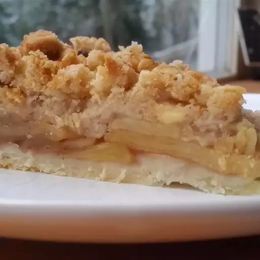

Apple Pie

Description
Make our most popular apple pie today, just like grandma made!
Ingredients
Pie Filling
- Apples - peeled, cored
- White Sugar
- All-purpose Flour
- Ground Cinnamon
- Ground Nutmeg
- Ground Allspice
- Frozen Pie Crust
- Butter
- Aluminum Foil
Topping
- Lemon Zest
- Brown Sugar
- All-purpose Flour
- Ground Cinnamon
- Butter
Steps
- Preheat over to 425F.
- Make the apple pie: Place apple slices in a large bowl. Mix white sugar, flour, cinnamon, nutmeg, and allspice together in a separate bowl until combined; sprinkle over apples and toss until evenly coated.
- Remove pie shell from freezer; pour apple mixture into pie shell and dot with butter. Lay a sheet of aluminum foil lightly on top of filling, but do not seal.
- Bake pie in the preheated oven for 10 minutes.
- Meanwhile, make the streusel topping: Mix flour, oats, brown sugar, lemon zest, and cinnamon in a medium bowl until combined. Cut in butter until mixture is crumbly. Remove pie from oven and sprinkle streusel on top.
- Reduce heat to 375 degrees F (190 degrees C). Return pie to oven and bake until streusel is browned and apples are tender, 30 to 35 minutes more. Cover loosely with aluminum foil to prevent excess browning.